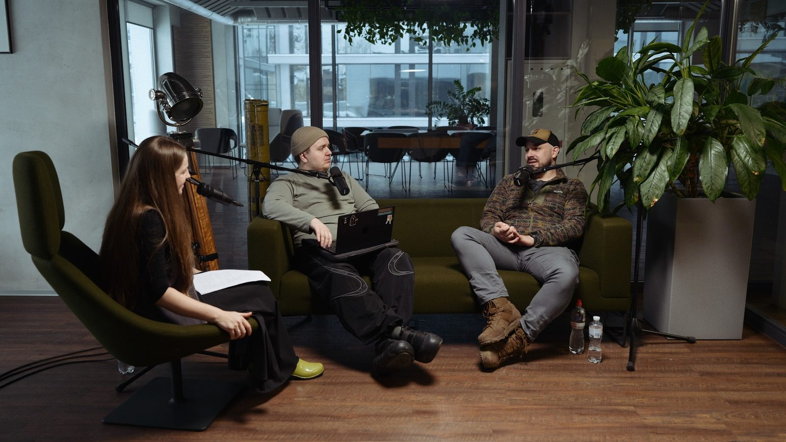
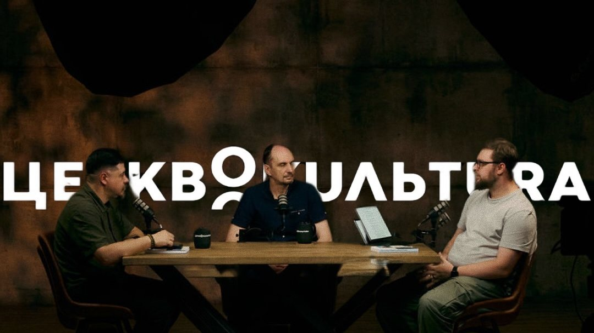

Наші подкасти
Два медіапроєкти, у яких ми чесно говоримо про віру, війну, церкву й суспільство — з гостями, чий досвід варто почути.

«Без броні»
Про людину, війну та віру
Розмови, які допомагають почути одне одного людям із різним досвідом війни. Ветерани, військові, капелани й рідні полеглих відверто говорять про фронт, втрату, віру й повернення до цивільного життя.
Детальніше про подкаст ↓
«Церквокультура»
Складні питання віри, суспільства та культури — разом
Без хайпу, поверхневих тем і клікбейту — розмови, які збудовують і кидають виклик думати. Про церкву й суспільство, сучасне богослов’я, війну і служіння, лідерство, психологію та культуру.
Детальніше про подкаст ↓Книги, програми та інструменти
THE FOUR
Простий спосіб поділитися Євангелієм через чотири символи: Бог любить тебе, гріх відділяє, Ісус заплатив ціну, обери життя з Ним. На українському сайті — пояснення ідеї та крамниця з браслетами й матеріалами.
Перейти на сайт і в крамницю ↗ Книга · Для дітей 5–8 років«Привіт, Ісусе! Де Ти?»
Книга-розмальовка, яка допомагає дитині й дорослому разом поговорити про війну, втрати й страхи, назвати свої почуття та шукати опору у вірі. Безкоштовно, оплачується лише доставка.
Детальніше про книгу ↓ Програма для школи · 5–9 класи«Ціннісні орієнтири виховання підлітків»
Навчальна програма з грифом МОН про стосунки, вибір, відповідальність, цінності та майбутнє. Готовий посібник для вчителя й навчання для педагогів із годинами підвищення кваліфікації.
Детальніше про програму ↓Список поповнюватиметься ресурсами різних служінь. зібрати ресурси служінь